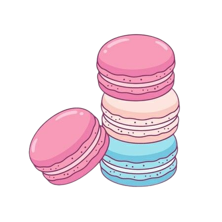

Cupcake

Resep Membuat Cupcake
Bahan
- Tepung terigu: 150 gram
- Gula pasir: 150 gram
- Mentega: 115 gram (lembutkan)
- Telur: 2 butir
- Susu cair: 120 ml
- Baking powder: 1 ½ sendok teh
- Vanili: 1 sendok teh
- Garam: 1/4 sendok teh
Cara Membuat Cupcake
- Panaskan oven
- Panaskan oven pada suhu 175°C dan siapkan loyang cupcake dengan paper cup.
- Kocok mentega dan gula
- Kocok mentega dan gula pasir dengan mixer hingga lembut dan mengembang.
- Tambahkan telur dan vanili
- Masukkan telur satu per satu, kocok rata setelah setiap penambahan. Tambahkan vanili dan aduk rata.
- Campurkan bahan kering
- Ayak tepung terigu, baking powder, dan garam. Masukkan campuran tepung sedikit-sedikit ke dalam adonan mentega, bergantian dengan susu cair, aduk rata setiap kali penambahan.
- Panggang
- Tuang adonan ke dalam paper cup hingga 2/3 penuh. Panggang selama 18-20 menit atau hingga tusuk gigi yang dimasukkan keluar bersih.
- Dinginkan
- Angkat dari oven, biarkan cupcake dingin di rak kawat.
Tips
- Gunakan bahan suhu ruang: Pastikan mentega, telur, dan susu berada pada suhu ruang agar mudah tercampur dan menghasilkan adonan yang lebih halus.
- Jangan overmix adonan: Aduk bahan hanya sampai tercampur rata. Terlalu lama mengaduk bisa membuat cupcake keras.
- Isi paper cup dengan tepat: Jangan terlalu penuh, isi sekitar 2/3 bagian cup agar cupcake bisa mengembang dengan baik tanpa tumpah.
- Periksa suhu oven: Setiap oven berbeda, jadi pastikan suhu oven tepat. Gunakan termometer oven jika perlu untuk memeriksa suhu.
- Tes kematangan: Gunakan tusuk gigi untuk memeriksa kematangan, jika keluar bersih, berarti cupcake sudah matang.
- Dinginkan sebelum dihias: Biarkan cupcake benar-benar dingin sebelum menambahkan frosting agar tidak meleleh.